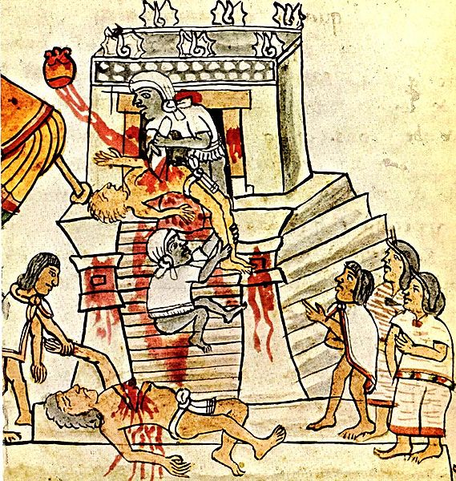

Despite its architectural wonders and advanced calendar, Aztec society was as death-obsessed and brutal as any twentieth century police state. A picture of the macabre tools used in ritual human sacrifice brings the terror to life and is reminiscent of the paraphernalia on display at the Tuol Sleng Genocide Museum in Phnom Penh. The live body of the victim, usually a prisoner of war, would be stretched across a carved altar, his sternum broken so his heart could be easily torn out of his chest. Dr. Mengele would approve.
Ritual sacrifice is by no means confined to primitive societies. Leftist causes have always had an atavistic yen for mass extermination, predicated on the puritanical superstition that human sacrifice, or to use the Marxist term, 'purification,' is an indispensable precursor to the achievement of utopia.